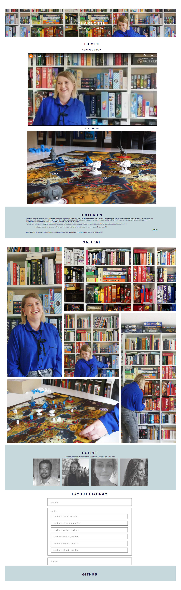

Tema 5 - Grundlæggende indhold
Pilotprojekt
Hvad gik opgaven ud på?
Pilotprojektet var vores første forsøg med at arbejde i Adobe Præmiere Pro og det at kreere en video. Opgaven gik ud på at finde en person som var passioneret omkring et emne og interviewe han/hende.
Selve interviewet skulle tilrettelægges af vores gruppe, og vi skulle sørge for at optage både film og lyd, samt tage nogle still-billedet ved siden af.
Opgaven skulle ende med at vi individuelt redigerede en video á cirka 1 minut, som skulle sættes ind på et simpelt site, vi selv skulle kode.
Reflektion
Da jeg først så at vi skulle lave en opgave hvor vi skulle filme og senere hen redigere klikkene sammen til en video , var jeg meget spændt og nervøs.
For siden den første uge, hvor vi i introugen skulle lave n kort video, havde jeg tænkt at Premiere Pro var utroligt kompliceret og at det var virkelig svært at filme ordentligt.
Videoen jeg endte med blev jeg rigtig glad for og stolt over, fordi den viste at jeg faktisk godt kunne filme og redigere en lille film, og at jeg faktisk synes det var rigtig, rigtig sjovt!
Opstart
Først startede vores gruppe med at lave en gruppekontrakt der skulle forventningsafstemme og danne rammen for et godt samarbejde internt. Vi fik hurtigt på plads at vi skulle interviewe en brætspils-enthusiast ved navn Charlotte, så næste skridt var at strukturere interviewet. Først lavede vi sammen en interview guide med spørgsmål, og fik skrevet de formelle ting vi skulle huske at sige. Det næste vi gjorde var at planlægge vores story board og B-rolls, så vi havde styr på hvad vi skulle filme.
Billedmateriale
Som en del af opgaven skulle vi også tage nogle still-billeder, og det viste sig at være en uventet udfordring.
Billederne blev grynede, og vi har ikke gode nok til at indstille kameraet, så det kompenserede for det lidt mørke rum og grå lys der var den dag.
Vi fik rettet lidt op på det med noget billedredigering i Photoshop, men billederne var stadig ikke tip top.

Videomateriale
Selve klipningen var en individuel opgave, så jeg startede med at dele vores lange one-take interview op i mindre dele.
Jeg sorterede lidt ud i klippene, så det kun var de bedste der var tilbage og besluttede herefter hvilken vinkel jeg gerne ville have på.
Historien skulle fokusere på hendes glæde og passion ved brætspil og en sagte baggrundsmusik skulle være munter og opløftende!
Resultatet
Resultatet af opgaven blev et simpelt site der viste filmen sat ind på to forskellige måder. Sitet skulle også indeholde en opsummering af historien samt still-billederne.
